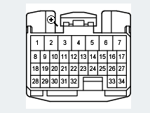

Buttons
Operations Using Keyboard and Mouse
[Zoom-In]: Zoom in a diagram.
[Zoom-Out]: Zoom out a diagram.
Place the mouse cursor somewhere in the window screen and perform either of the following operations:
- [Zoom-In]: Hold down the [Ctrl] key and click the left mouse button.
- [Zoom-Out]: Hold down the [Ctrl] + [Shift] keys and click the left mouse button